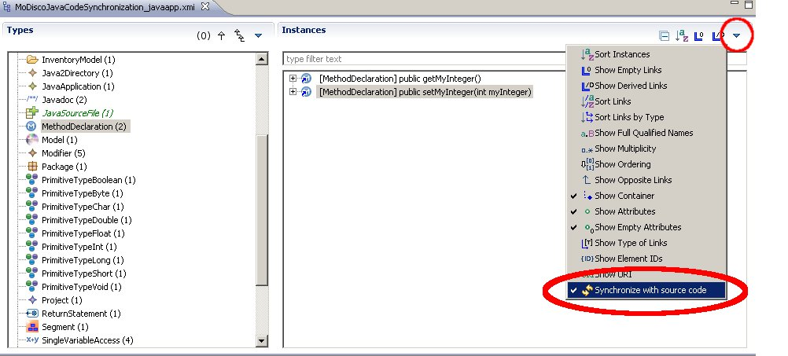
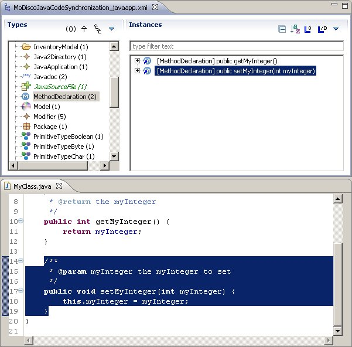
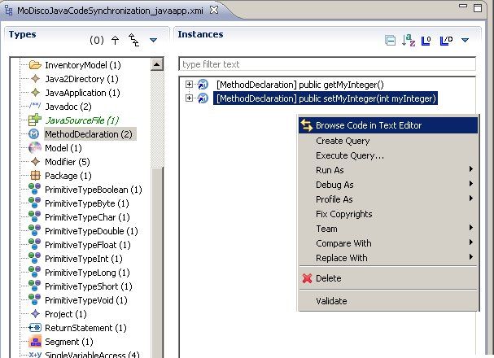

A new step in Java model browsing is to link model elements directly with their source code. This synchronization is possible thanks to the MoDisco Source Code Synchronization Framework. Basically, this new feature allows the MoDisco Model Browser to behave like the Eclipse outline.
Prerequisite is to create a Composition model
Once your composition model is opened, all you have to do to navigate from your java model to its source code is to activate the source code synchronization (this will prevent the Eclipse Properties view from opening on double-click):

And then double click on an element to directly open its file and get this element selected : on the following figure we double-clicked on the method "setMyInteger"

If you prefer to keep the action "Open the Properties view" on the double click action, you can use the contextual menu to perform a single synchronization : the result will be exactly the same
